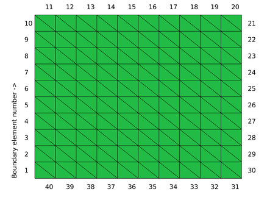
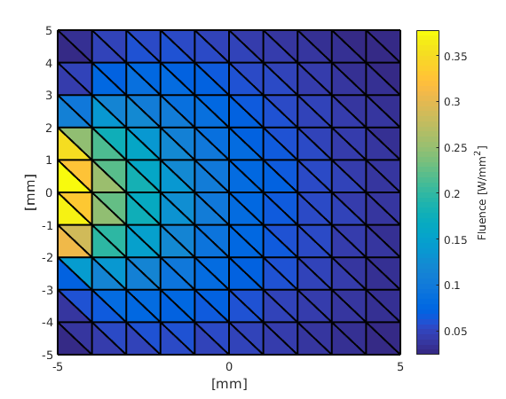

Simple example: simpletest.m
This example demonstrates how to setup a simple photon transport simulation, run it and visualise the result.
Contents
Create a triangular mesh
Function createRectangularMesh, which is a convenience function provided by ValoMC, is used to setup a simple triangular mesh. The mesh is visualised in the figure below. Each element (a triangle) and boundary element (a line) in the mesh has a unique index through which they are referred to. The indices of the boundary elements are shown in the figure.

xsize = 10; % width of the region [mm] ysize = 10; % height of the region [mm] dh = 1; % discretisation size [mm] vmcmesh = createRectangularMesh(xsize, ysize, dh);
Give optical parameters
Constant optical parameters are set troughout the medium.
vmcmedium.absorption_coefficient = 0.01; % absorption coefficient [1/mm] vmcmedium.scattering_coefficient = 1.0; % scattering coefficient [1/mm] vmcmedium.scattering_anisotropy = 0.9; % anisotropy parameter g of % the Heneye-Greenstein scattering % phase function [unitless] vmcmedium.refractive_index = 1.3; % refractive index [unitless]
Create a light source
Set a light source from boundary elements 4 to 7 with a cosinic angular distribution. This means photons are launched from random locations in boundary elements 4 to 7 so that the initial propagation direction with respect to the surface normal follows a cosine distribution. In the current mesh, each boundary element is 1 mm wide, so the total width of the light source is 4 mm. The first boundary element is at the lower left corner (see the figure above).
vmcboundary.lightsource(4:7) = {'cosinic'};
% Run the Monte Carlo simulation
% Use the parameters that were generated to run the simulation in the mesh.
solution = ValoMC(vmcmesh, vmcmedium, vmcboundary);
Initializing MC2D using 16 threads... Computing... ...done Done
Plot the solution
The solution is given as an array in which the values represent a constant photon fluence in each element.
% This array can be plotted with Matlab's built-in function patch patch('Faces',vmcmesh.H,'Vertices',vmcmesh.r,'FaceVertexCData', solution.element_fluence, 'FaceColor', 'flat', 'LineWidth',1.5); hold on; xlabel('[mm]'); ylabel('[mm]'); c = colorbar; % create a colorbar c.Label.String = 'Fluence [W/mm^2]'; hold off